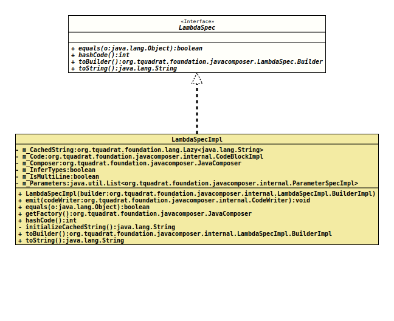

Interface LambdaSpec
- All Known Implementing Classes:
LambdaSpecImpl
The specification for a generated lambda construct.
Parameters and Types
When adding more than one parameter, all of them must have a specified
type or none of them may have one, leaving the compiler to infer the type.
As
ParameterSpec.builder()
do require a type, we take
Primitives.VOID
instead of a concrete type if we want to get the type being inferred.
Formatting
Basically, a lambda expression has two different formats, one without curly braces
a -> modify( a )and the other with with curly braces, requiring a return statement:
a ->
{
modify( a );
return a.result;
}The body of the second form usually has more than one statement.
JavaComposer emits the first form when only one of the methods
is called only once on the builder instance. The second form is forced, when one of the methods above is called again, or when one of the methods
LambdaSpec.Builder.addComment(String, Object...)LambdaSpec.Builder.addStatement(CodeBlock)LambdaSpec.Builder.addStatement(String, Object...)LambdaSpec.Builder.beginControlFlow(String, Object...)LambdaSpec.Builder.endControlFlow()LambdaSpec.Builder.endControlFlow(String, Object...)LambdaSpec.Builder.nextControlFlow(String, Object...)
is called.
There is no validation on the code; this means it is in the caller's
responsibility to ensure that there is a return statement in the
second case.
- Author:
- Thomas Thrien (thomas.thrien@tquadrat.org)
- Version:
- $Id: LambdaSpec.java 855 2021-01-21 20:22:52Z tquadrat $
- Since:
- 0.0.5
- UML Diagram
-

UML Diagram for "org.tquadrat.foundation.javacomposer.LambdaSpec"
{kind=link}
-
Nested Class Summary
Nested Classes -
Method Summary
Modifier and TypeMethodDescriptionstatic LambdaSpec.Builderbuilder()Deprecated, for removal: This API element is subject to removal in a future version.booleaninthashCode()Creates an new builder that is initialised with the components of this lambda.toString()
-
Method Details
-
builder
@Deprecated(since="0.2.0", forRemoval=true) @API(status=DEPRECATED, since="0.0.5") static LambdaSpec.Builder builder()Deprecated, for removal: This API element is subject to removal in a future version.Replaced byJavaComposer.lambdaBuilder().Creates a builder for an instance ofLambdaSpec.- Returns:
- The new builder.
-
equals
-
hashCode
int hashCode() -
toBuilder
Creates an new builder that is initialised with the components of this lambda.- Returns:
- The new builder.
-
toString
-
JavaComposer.lambdaBuilder().